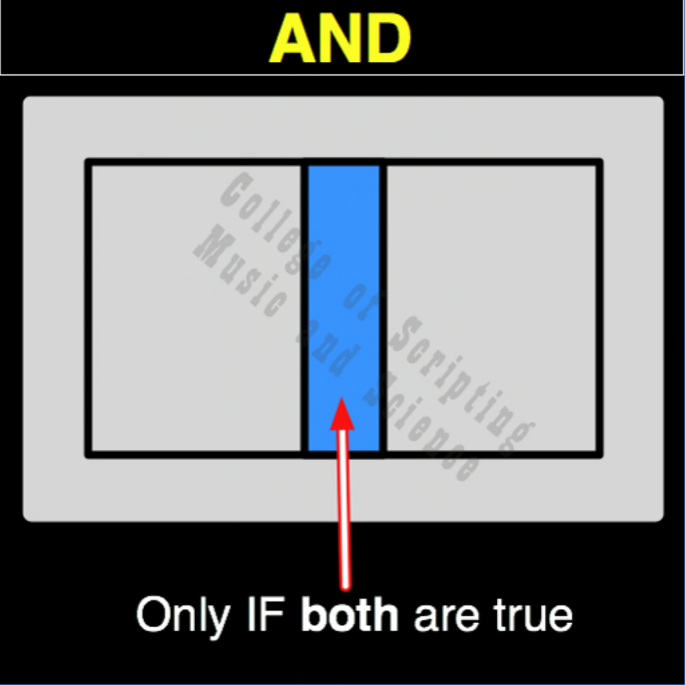

| AND | |
|---|---|
| 0 + 0 | = 0 |
| 0 + 1 | = 0 |
| 1 + 0 | = 0 |
| 1 + 1 | = 1 |

In the ethical architecture of Starfleet, the AND gate represents critical Failsafe Authentication and absolute consensus. For the most severe, irreversible actions, such as initiating a ship-wide self-destruct or activating experimental core overrides, a single officer's command is mathematically insufficient. If the Captain authorizes the sequence (1) but the First Officer refuses or is incapacitated (0), the system rejects the command and halts (0). The gate only outputs authorization (1) when both trusted officers are in perfect, unanimous agreement (1,1). It is the ultimate safeguard against rogue actions, panic, and unilateral destructive power.
| AND Gate FLIPPED to make NAND Gate | |
|---|---|
| 0 + 0 = 0 | FLIPPED becomes 1 |
| 0 + 1 = 0 | FLIPPED becomes 1 |
| 1 + 0 = 0 | FLIPPED becomes 1 |
| 1 + 1 = 1 | FLIPPED becomes 0 |
AND is the OPPOSITE of NAND.
AND RETURNS TRUE (1) ONLY WHEN BOTH INPUTS ARE TRUE.
AND is its own MIRROR (Perfect Symmetrical Balance).
// gateAnd.js
function gateAnd(a, b)
{
// Failsafe protocol: Critical authorization (1) requires absolute consensus from both command officers.
if (a == 1 && b == 1)
{
// Both True (Consensus Achieved)
return 1;
}
else
{
// Consensus Broken (Command Rejected)
return 0;
}
}
//----//
/*
AND
0001
A B
0 0 = 0
0 1 = 0
1 0 = 0
1 1 = 1
Opposite: NAND
*/